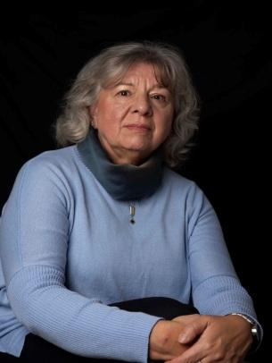
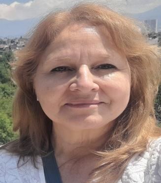

Somos docentes investigadoras y formamos parte del equipo de investigación (UNLa) “Migraciones desde países angloparlantes durante el siglo XIX. Su impacto en el conurbano sur bonaerense”.
Nuestros trabajos fueron presentados en la X Conferencia de SILAS - XX Simposio de Estudios Irlandeses de ABEI en América Latina: Perspectivas y Conexiones Interdisciplinarias.
Nuestras presentaciones giran en torno a un estudio de cartas de migrantes angloparlantes al Río de la Plata durante la segunda mitad del siglo XIX. Por un lado, el trabajo “Lazos de unión: cartas de mujeres migrantes al Río de la Plata” (investigación de Cuello) aborda el análisis de cartas personales. Las cartas han funcionado, desde siempre, como un puente entre las personas; cuando se producen en contextos de emigración, esta cualidad se hace aún más evidente y adquiere características particulares. Según señala Fitzpatrick en su artículo “Irish Emigration and the Art of Letter-Writing” (2006), las cartas personales constituyen un testimonio que permite observar, desde otra perspectiva, el proceso de fractura que se produce en la migración. El trabajo propone tomar como objeto de análisis una selección de cartas escritas por mujeres angloparlantes migrantes al Río de la Plata durante las últimas décadas del siglo XIX y las primeras del siglo XX. Entre ellas se encuentran las de la inglesa Agnes Hoare, abuela de Maria Elena Walsh, publicadas en la sección final de la novela Novios de Antaño (1995), así como las de las irlandesas Eliza Murphy, Alice Breen, entre otras, cuyas misivas integran el Archivo Anastasia Joyce de la Biblioteca Max von Duch, UdeSA.
La hipótesis del trabajo sostiene que estas cartas, aparentemente sencillas, revelan una escritura particular propia de las mujeres, porque describen el mundo doméstico y reflejan una preocupación por el cuidado y bienestar de los miembros de sus familias, tanto en el Río de la Plata como en sus países de origen. Esta escritura de unión podría constituir uno de los fundamentos para el surgimiento de una vital comunidad argentino-irlandesa, que continúa desempeñando un papel fundamental hasta el presente.
Para abordar este estudio se consideraron las siguientes herramientas teóricas: el trabajo de Edmundo Murray en Becoming Irlandés, que analiza cartas escritas por inmigrantes irlandeses, tomados del común de la gente, para observar el desarrollo de su proceso identitario en la sociedad rioplatense del siglo XIX, el concepto de migración como proceso, elaborado por Cruset, y el concepto de ecofeminismo, trabajado por Puleo. Este grupo de mujeres desconocidas —esposas y madres en muchos casos — recrea, a través de su prosa, los avatares de vivir en otra tierra y brinda un valioso reflejo de la vida cotidiana de los migrantes.
Por otro lado, el trabajo “Narrando travesías: estudio de las cartas de la abuela Agnes” (investigación de Fuanna) intenta mostrar que las cartas son una forma personal y esencial de escritura, que permite establecer una conexión íntima entre quien escribe y quien lee. A la vez tiende un puente entre el presente y el futuro, y se convierte en una fuente valiosa para conocer el pasado desde la cotidianeidad de quienes experimentan una nueva vida en tierras extrañas. Este trabajo se propone estudiar las cartas de Agnes Hoare, escritas desde 1872 hasta 1899, un documento real que aparece al final de la novela Novios de Antaño (1995) de María Elena Walsh. En ellas se testimonia la experiencia de una inmigrante británica en Argentina, quien más tarde contraería matrimonio allí con un inmigrante irlandés, partiendo de la idea de que el concepto de inmigrante conlleva nociones de quiebre, desconexión, renuncia a costumbres previas y procesos de adaptación a un nuevo lenguaje y a un entorno cultural diferente. No obstante, incorporamos también una perspectiva transnacional a partir de lo propuesto por las investigadoras Schiller, Basch y Blanc-Szanton (1992), quienes consideran que los inmigrantes construyen campos sociales que vinculan su país de origen con su país de asentamiento, de modo que trascienden las demarcaciones entre países y conectan dos comunidades dentro de un mismo espacio social. Se analizan las cartas como relatos de vida, según la concepción de Ricoeur (1999), quien afirma que la “historia de la vida se convierte en una historia contada”, pues, sin ello, la vida sería meramente un fenómeno biológico. Se las aborda también como literatura de viaje, retomando el concepto de culturas viajeras desarrollado por Clifford (1991), quien plantea que los desplazamientos responden a motivaciones culturales, políticas y económicas, que afectan especialmente a los viajeros sin privilegios, como es el caso de Agnes Hoare. Sus cartas, recuperadas y traducidas por su nieta María Elena Walsh, permiten reconstruir una experiencia migratoria desde la intimidad, y aportan una perspectiva singular a los estudios sobre movilidad, identidad y memoria.
Investigar cartas personales nos permite recuperar la historia de vida de quienes nos precedieron, una historia entretejida con la de nuestro país. Indudablemente, nos invita a emprender un viaje hacia nuestras raíces.
Sobre las autoras

Mónica Beatriz Cuello tiene una Maestría en Literatura
Angloamericana por la Universidad Nacional de Córdoba, una
Licenciatura en Lengua, Lingüística y Literatura Inglesas por
la Universidad Nacional del Litoral, Profesora de Inglés
egresada del Instituto Superior del Profesorado Pbro. Dr.
Antonio Sáenz, y un Diploma en Estudios Irlandeses por la
Universidad del Salvador.
Es directora y co- directora de proyectos de investigación en
la Universidad Nacional de Lanús. Es investigadora de
Categoría 5 del Programa de Incentivo para Docentes
Investigadores de Universidades Nacionales Argentinas.
Actualmente investiga el proceso de comprensión lectora en
inglés en estudiantes universitarios, así como la migración
angloparlante a Argentina, su construcción de identidad y su
impacto en la cultura local. Ha participado en eventos
académicos tanto en Argentina como en el extranjero y ha
publicado artículos en publicaciones académicas.
En este momento enseña Lengua Inglesa Lectocomprensión, y
Literatura de los Países de Habla Inglesa I y II en la UNLa,
participa en la AEIS (Asociación de Estudios Irlandeses del
Sur) como miembro del consejo, y coordina el James Joyce
Centre Argentina.

Andrea Fuanna es profesora y licenciada en Filosofía (Universidad del Salvador) y doctoranda en Filosofía por la Universidad Nacional de Lanús (UNLa).Actualmente cursa la Especialización en Pensamiento Nacional y Latinoamericano del siglo XX en esa universidad. Obtuvo el Diploma de Estudios Irlandeses en la Universidad del Salvador (cohorte 2023).Desde hace años, centra su investigación en el campo de la Filosofía Latinoamericana, abordando dimensiones socioeconómicas, religiosas, culturales. Su trabajo de investigación actual titulado “Migraciones desde países angloparlantes durante el siglo XIX. Su impacto en el conurbano sur bonaerense” (UNLa) y tambien “Los pensadores nacionales como versión disidente de la Filosofía Occidental Europea. Una revisión del pensamiento nacional argentino contemporáneo” (UNLa) ambos se insertan en esa línea. Posee diversas publicaciones en torno a sus temas de investigación. En los últimos años ha incorporado el eje literario latinoamericano a su enfoque filosófico, especialmente en relación con la cuestión de la identidad. Concibe la filosofía como una herramienta clave para problematizar los fenómenos migratorios, permitiendo abordar transformaciones identitarias, de género y situacionales. La incorporación de los Estudios Irlandeses ha significado una apertura enriquecedora que amplía su perspectiva sobre las dinámicas identitarias en América Latina.